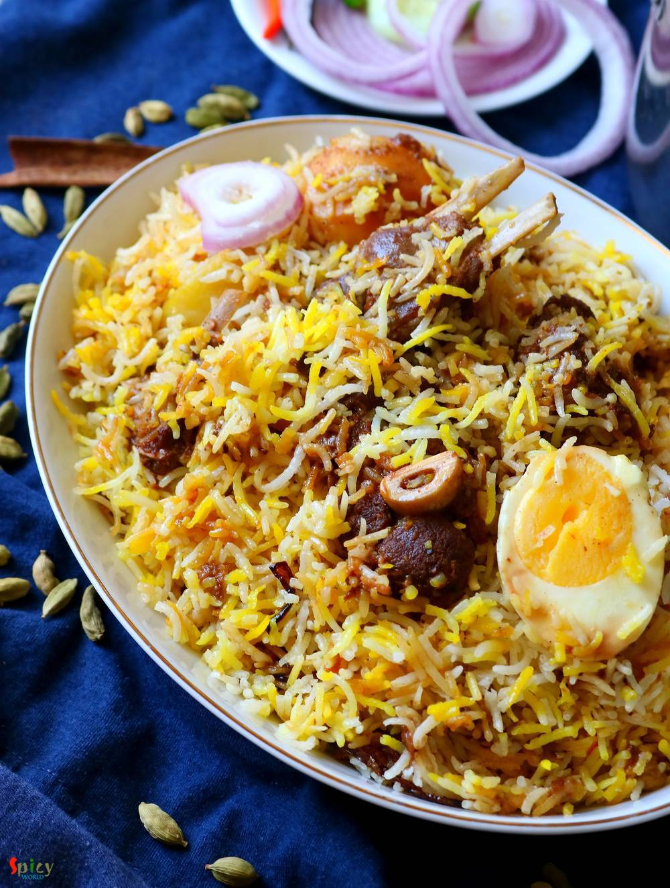

Simple and Easy Recipes
Kolkata style Mutton Biriyani
© 2016 Spicy World, Published on: Jul 2, 2019
We always have a grand feeling whenever we hear the name 'Biriyani'. One of the most popular Indian dish accross the world is now Biriyani. Kolkata style Mutton Biriyani has a very unique aroma, juicy mutton pieces, long grain fragrant Basmati rice, soft potatoes and a piece of egg - everything in one plate. Whenever you are visiting Kolkata, do taste the Roshogolla, Mishti doi and Mutton Biriyani. There are many popular restaurants like Arsalan, Aminia, Oudh 1590, Kabuliwala, Nizam, Zeeshan who serve excellent quality of Biriyani. Still homemade Biriyani has its own charm, it needs love, care, patience and practice. I know that the process is lengthy but trust me it's worth a try.

Ingredients
- For Mutton:
- 600 grams of mutton.
- 3 Tablespoons of yogurt.
- 2 Tablespoons of salt.
- 2 Tablespoons of red chili powder and 3 Tablespoons of biriyani masala powder.
- 1 cup of beresta (fried onion) and 2 Tablespoons of mawa (or 1 Tablespoon of sugar).
- 5 Tablespoons of oil.
- 2 Tablespoons of ginger garlic paste.
- For Potatoes:
- 3 medium sized potatoes, peeled.
- 1 Teaspoon of salt.
- Pinch of yellow food color.
- Oil for frying.
- For Rice:
- 350-400 grams of long grain basmati rice.
- 5 cups of water.
- 3-4 Tablespoons of salt.
- 1 Tablespoon of oil.
- Whole spices (4 green cardamom, 4 cloves, 1 medium cinnamon stick, 8 black peppercorns, 1 Tablespoon of black cumin seeds, 1 mace).
- For assembling:
- 1/4th cup of warm milk.
- Pinch of saffron.
- 1 Teaspoon of rose water.
- Half Teaspoon of kewra water.
- 2 drops of meetha atar. (optional)
- 1 Tablespoon of mawa. (optional)
- A handful of beresta or fried onion.
- 2 Tablespoons of ghee.
- 2 hard boiled eggs.


Steps
Marinate the mutton with yogurt, ginger garlic paste, salt, red chili powder, biriyani masala and 3 Tablespoons of oil. Mix well and keep in refrigerator for overnight.
Wash the rice well and soak them in water for at least 12 hours.
Add some salt and yellow food color on potatoes, rub well and deep fry them in oil for 5 minutes on medium flame. Take them out.
Heat 2 Tablespoons of oil in a pressure cooker.
Add the mutton pieces and fry for 10 minutes on medium flame.
Then add Half cup of water, fried potatoes and mawa or sugar. Mix well and cook until 5-6 whistles come or mutton becomes soft.
Then take out the potatoes, and add beresta in the mutton, mix well and cook for another 10 minutes.
Turn off the flame and take out half of the mutton gravy in a bowl for later use.
In a cotton cloth, put all the whole spices, tie the ends and make a potli.
In a big vessel, boil 5-6 cups of water.
Add that potli, 4 Tablespoons of salt and oil. Boil for a minute.
Then add the soaked rice. Cook until the rice becomes 90% soft.
Strain the rice immediately.
In some warm milk, add saffron, rose water and kewra water, mix well, cover and keep aside.
For assembling the Biriyani, take a big, open vessel. Arrange the cooked mutton in one layer.
Next add the cooked rice as a second layer.
Then add potatoes, gravy of the mutton which we separated earlier, saffron and essence soaked milk, beresta, mawa, ghee and hard boiled eggs.
Cover the vessel with alumunium foil, then place a tight lid or you can seal the edges with flour dough.
Put the vessel on a hot tawa. Keep the flame high for first 5 minutes and then reduce it to low for 25 minutes.
Then turn off the flame and give the biriyani 15 more minutes resting time.
Open the lid, cut the biriyani from sides, never put the spatula in the center.
Your mutton biriyani is ready to serve.
Serve this hot with salad and coke ..
")